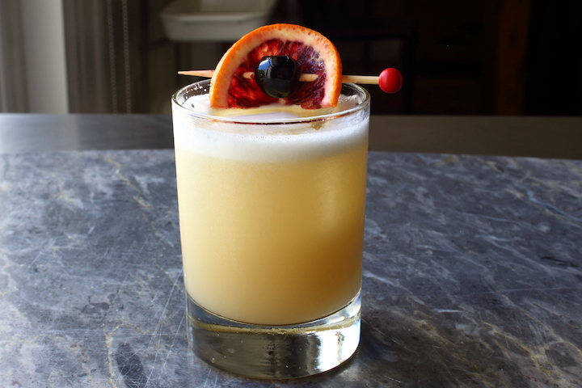

Whiskey Sour

The "I'm not an alcoholic" Alcoholic Drink
Sometimes you just want a good solid drink, this Whiskey Sour recipe will provide you with a nice end of the day treat.
What to bring to the Table
- High quality bourbon whiskey
- Lemon juice
- Maple (or simple) syrup
- Garnish of peel and cocktail cherry
What to Do
- Add the bourbon whiskey, lemon juice, and syrup to a cocktail shaker. Fill with a handful of ice and shake until very cold.
- Strain the drink into a lowball or Old Fashioned glass. Serve with ice, an orange peel and a cocktail cherry.
Home